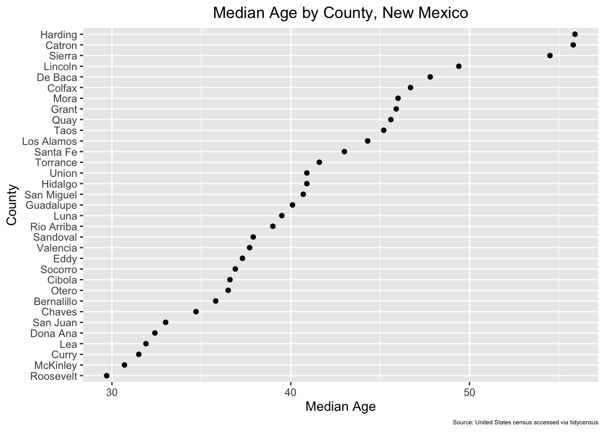
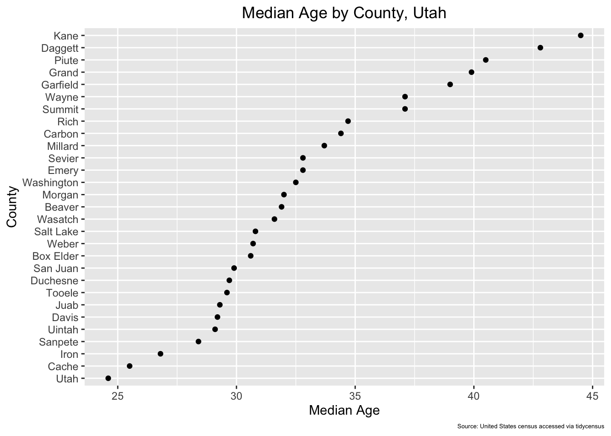
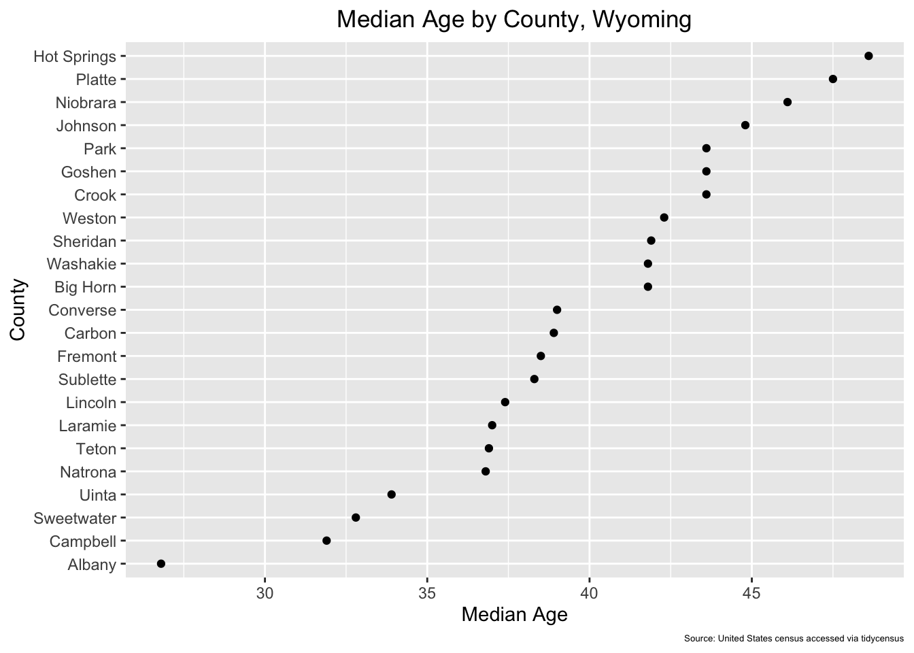
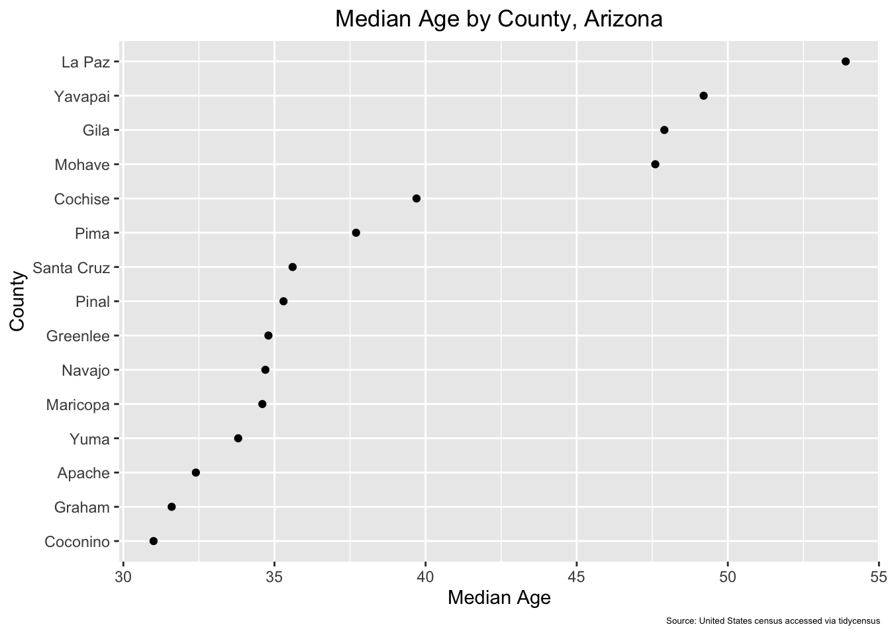
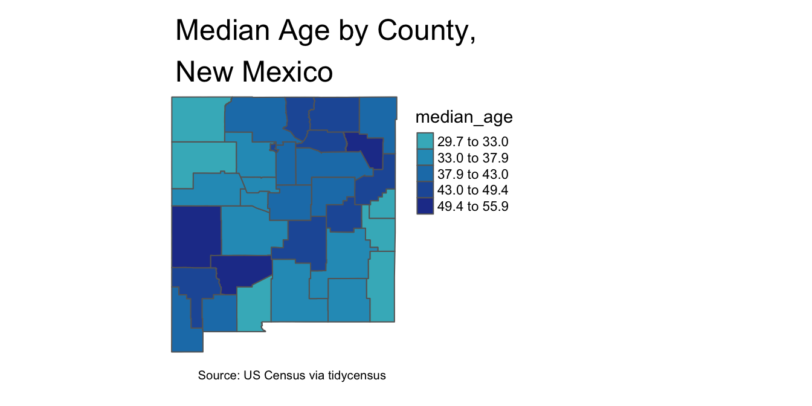
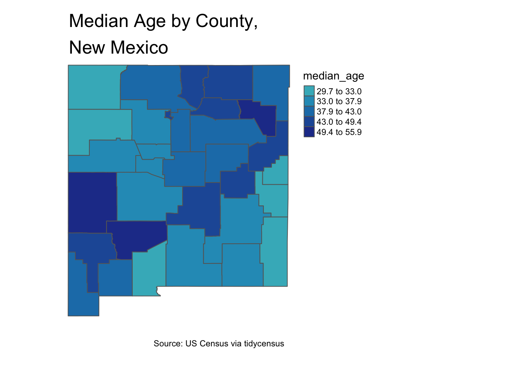
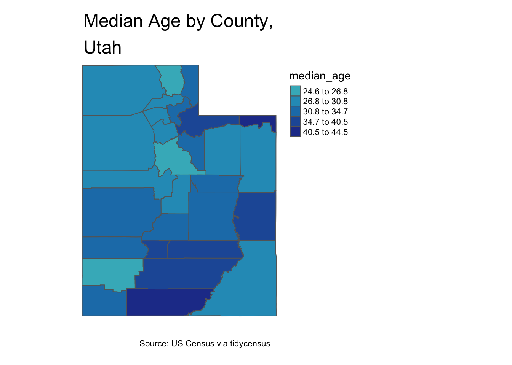
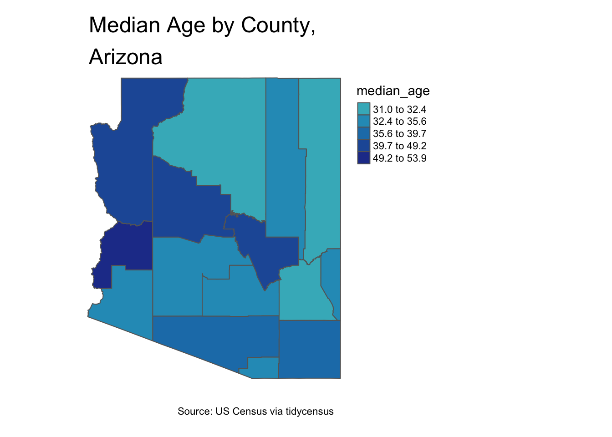

7 Functions and Iteration
7.1 Automate creation of county-level median age graphs
7.1.1 Write county-level median age graph function
Write a function to create a median age graph for a given state, based on two inputs: the 2 letter state abbreviation (used in the tidycensus call) and state name (used to label the graph)
# Write median age graph function
median_age_graph<-function(state_abbrev, state_full_name){
census_call<-get_decennial(geography = "county",
state=state_abbrev,
variables = "P013001",
geometry=TRUE,
year = 2010) %>%
rename(median_age=value) %>%
mutate(County=str_remove(NAME, paste0(" County,", " ", state_full_name))) %>%
select(-NAME)
median_age_ggplot<-
census_call %>%
ggplot(aes(x = median_age, y = reorder(County, median_age))) +
geom_point()+
labs(title=paste0("Median Age by County,", " ", state_full_name), x="Median Age", y="County")+
theme(plot.title=element_text(hjust=0.5))
return(median_age_ggplot)
}
# Test function for New Mexico
median_age_graph("NM", "New Mexico")
7.1.2 Iteratively apply median_age_graph function to multiple input elements
Apply the median_age_graph function iteratively to New Mexico, Utah, Arizona, and Wyoming, thereby creating median age graphs for all these states; create a list to contain each of these output graphs as a separate list element
# Create input vectors
state_codes<-c("NM", "UT", "AZ", "WY")
state_names<-c("New Mexico", "Utah", "Arizona", "Wyoming")
# Applies the "median_age_graph" function to multiple inputs (specified by the input vectors), and then places the outputs (i.e. median age graphs for New Mexico, Utah, Arizona, and Wyoming) in a list assigned to an object named "county_age_graphs_list"
county_age_graphs_list<-map2(.x=state_codes, .y=state_names, .f=median_age_graph)## Getting data from the 2010 decennial Census## Downloading feature geometry from the Census website. To cache shapefiles for use in future sessions, set `options(tigris_use_cache = TRUE)`.## Using FIPS code '35' for state 'NM'## Using Census Summary File 1## Getting data from the 2010 decennial Census## Downloading feature geometry from the Census website. To cache shapefiles for use in future sessions, set `options(tigris_use_cache = TRUE)`.## Using FIPS code '49' for state 'UT'## Using Census Summary File 1## Getting data from the 2010 decennial Census## Downloading feature geometry from the Census website. To cache shapefiles for use in future sessions, set `options(tigris_use_cache = TRUE)`.## Using FIPS code '04' for state 'AZ'## Using Census Summary File 1## Getting data from the 2010 decennial Census## Downloading feature geometry from the Census website. To cache shapefiles for use in future sessions, set `options(tigris_use_cache = TRUE)`.## Using FIPS code '56' for state 'WY'## Using Census Summary File 1# Open the list that contains the median age graphs
county_age_graphs_list## [[1]]
##
## [[2]]
##
## [[3]]
##
## [[4]]
# Extract the Arizona graph by its index
county_age_graphs_list %>% pluck(3)
# Attach names to list elements and extract by name; for convenience, we'll name list elements based on "state_codes" vector
names(county_age_graphs_list)<-state_codes
# Extract the Wyoming graph by its name
county_age_graphs_list %>% pluck("WY")
7.2 Automate creation of median-age maps
7.2.1 Write function to create county-level median age maps
Write a function to create a county-level median age map for a given state, based on two inputs: the 2 letter state abbreviation (used in the tidycensus call) and state name (used to label the map)
# Write function to create county-level median age map for a given state
median_age_map<-function(state_abbrev, state_full_name){
census_call<-get_decennial(geography = "county",
state=state_abbrev,
variables = "P013001",
geometry=TRUE,
year = 2010) %>%
rename(median_age=value) %>%
mutate(County=str_remove(NAME, paste0(" County,", " ", state_full_name))) %>%
select(-NAME)
county_median_age_map<-
tm_shape(census_call)+
tm_polygons(col="median_age",
style="jenks",
palette="YlGnBu",
midpoint=TRUE)+
tm_layout(frame=FALSE,
main.title=paste0("Median Age by County,\n", state_full_name),
main.title.position="left",
legend.outside=TRUE)
return(county_median_age_map)
}
# Test function for New Mexico
median_age_map("NM", "New Mexico")
7.2.2 Iteratively apply median_age_map function to multiple input elements
# Create input vectors
state_codes<-c("NM", "UT", "AZ", "WY")
state_names<-c("New Mexico", "Utah", "Arizona", "Wyoming")
# Applies the "median_age_map" function to multiple inputs (specified by the input vectors), and then places the outputs (i.e. median age maps for New Mexico, Utah, Arizona, and Wyoming) in a list assigned to an object named "county_age_maps_list"
county_age_maps_list<-map2(.x=state_codes, .y=state_names,median_age_map)## Getting data from the 2010 decennial Census## Downloading feature geometry from the Census website. To cache shapefiles for use in future sessions, set `options(tigris_use_cache = TRUE)`.## Using FIPS code '35' for state 'NM'## Using Census Summary File 1## Getting data from the 2010 decennial Census## Downloading feature geometry from the Census website. To cache shapefiles for use in future sessions, set `options(tigris_use_cache = TRUE)`.## Using FIPS code '49' for state 'UT'## Using Census Summary File 1## Getting data from the 2010 decennial Census## Downloading feature geometry from the Census website. To cache shapefiles for use in future sessions, set `options(tigris_use_cache = TRUE)`.## Using FIPS code '04' for state 'AZ'## Using Census Summary File 1## Getting data from the 2010 decennial Census## Downloading feature geometry from the Census website. To cache shapefiles for use in future sessions, set `options(tigris_use_cache = TRUE)`.## Using FIPS code '56' for state 'WY'## Using Census Summary File 1# Open the list that contains the median age maps
county_age_maps_list## [[1]]
##
## [[2]]
##
## [[3]]
##
## [[4]]
# Extract the Utah map by its index
county_age_maps_list %>% pluck(2)
# Attach names (based on "state_codes" vector) to "county_age_maps_list" list elements
names(county_age_maps_list)<-state_codes
# Extract the Arizona map by name
county_age_maps_list %>% pluck("AZ")